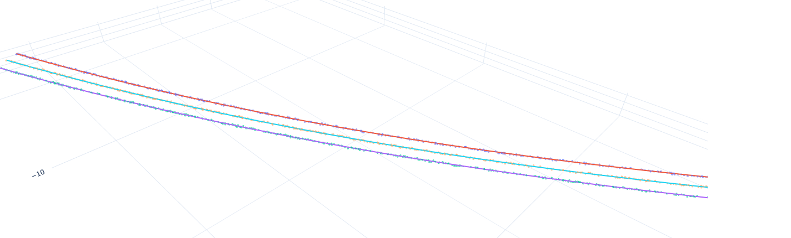

Finding overhead cables in an aerial scan and measuring how far they sag.
github.com/hajar6883/catenary-wire-modeling

Fig. 01a · Three conductors segmented from one scan. Faint dots are raw LiDAR returns; solid lines are the fitted catenaries.
Inspecting an overhead power line means flying the corridor with a LiDAR scanner and then picking the wires out of millions of unlabelled points by hand. Nothing in the raw scan says which points are cable and which are vegetation, pylon or ground.
Sag is what the inspection is actually after. A conductor hanging lower than it should is a fault waiting to happen, and a hanging cable follows a catenary, the curve a chain takes under its own weight. Fit that curve and you get a number you can act on, instead of a cloud of points somebody has to look at.
.parquet point cloud
|
v
PCA reduce, find the dominant direction of each structure
|
v
DBSCAN / HDBSCAN group points into individual wires
|
v
catenary fit least squares on y = a·cosh((x-b)/a) + c (SciPy)
|
v
Postgres fitted parameters + RMSE per wire
One core module does parse, detect and save. Three entry points share it, so the same code path runs whichever way the data arrives:
main builds the image, health-checks it, and publishes to GHCR./detect call persists its fitted parameters and RMSE, so a bad fit is visible after the fact rather than lost.